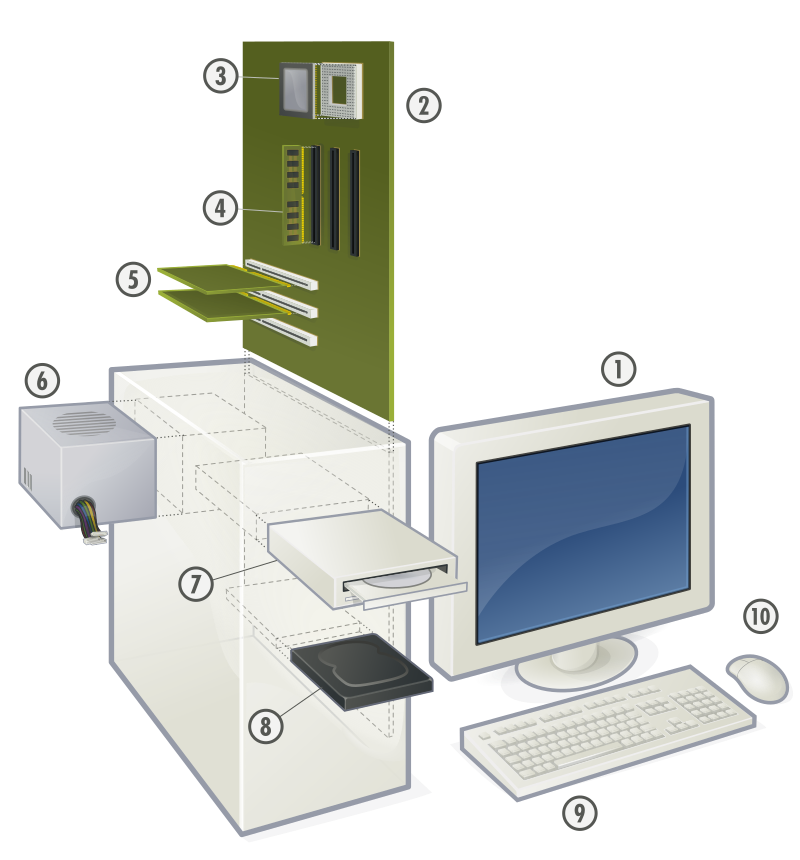

¿Qué ofrecemos?
Mantenimiento Preventivo
Revisión constante para evitar fallos y mejorar el rendimiento.
Soporte Técnico
Solución de problemas en hardware y software.
Seguridad Informática
Protección contra virus, ataques y pérdida de información.
¿Qué es?
-
Es el conjunto de actividades técnicas y procesos que se realizan para:
Mantenimiento de Sistemas Informáticos
Mantenimiento Preventivo
Es el que se realiza antes de que ocurra una falla. Sirve para evitar problemas en el sistema y mantenerlo funcionando correctamente. Incluye limpieza de hardware, actualización de software, revisión de antivirus y eliminación de archivos innecesarios.Mantenimiento Correctivo
Se aplica cuando ya existe un problema o falla en el sistema. Su objetivo es reparar el daño para que el equipo vuelva a funcionar. Puede incluir cambio de piezas, reinstalación del sistema operativo o eliminación de virus.Mantenimiento Predictivo
Se basa en analizar el funcionamiento del sistema para detectar posibles fallas antes de que ocurran. Utiliza herramientas de monitoreo y diagnóstico para prevenir daños mayores.Mantenimiento de Hardware
Mantenimiento de hardware Se enfoca en las partes físicas del equipo como teclado, monitor, disco duro o memoria RAM. Incluye limpieza, reparación o reemplazo de componentes dañados.Mantenimiento de Software
Se encarga de los programas y sistemas operativos. Incluye actualizaciones, instalación de programas, eliminación de errores y optimización del rendimiento.Mantenimiento Predictivo
Se basa en analizar el funcionamiento del sistema para detectar posibles fallas antes de que ocurran. Utiliza herramientas de monitoreo y diagnóstico para prevenir daños mayores.Hardware y software

El hardware son los componentes físicos como la computadora teclado y monitor mientras que el software son los programas que permiten realizar tareas
Copias de Seguridad

Consisten en guardar la información en otro lugar para evitar perderla en caso de fallas o ataques
Beneficios

Importancia de los Sistemas Informáticos
Los sistemas informáticos son fundamentales en la vida moderna, ya que permiten realizar tareas de manera rápida, organizada y segura. Actualmente se utilizan en empresas, escuelas, hospitales, bancos y hogares para almacenar información, comunicarse y automatizar procesos.
Gracias a los avances tecnológicos, los sistemas informáticos ayudan a mejorar la productividad, reducir errores y facilitar el acceso a la información desde cualquier lugar del mundo.
Componentes de un Sistema Informático
Hardware
Son todos los componentes físicos de una computadora como monitor, teclado, mouse, memoria RAM, disco duro y procesador.
Software
Son los programas y aplicaciones que permiten realizar tareas específicas, como navegadores, sistemas operativos y aplicaciones de oficina.
Usuarios
Son las personas que utilizan los sistemas informáticos para realizar diferentes actividades laborales, educativas o personales.
Tipos de Software
- Software de Sistema: controla el funcionamiento del equipo, por ejemplo Windows o Linux.
- Software de Aplicación: programas utilizados para tareas específicas como Word, Excel o navegadores web.
- Software de Programación: herramientas utilizadas para crear nuevos programas y aplicaciones.
Seguridad Informática Avanzada
La seguridad informática protege los equipos y la información frente a amenazas digitales. Algunas medidas importantes son:
- Uso de contraseñas seguras.
- Actualización constante del sistema.
- Instalación de antivirus.
- Realización de copias de seguridad.
- Protección contra malware y phishing.
- Uso responsable de internet.
Problemas Comunes en Computadoras
Virus Informáticos
Programas maliciosos que dañan archivos, ralentizan el sistema o roban información.
Sobrecalentamiento
Ocurre cuando el equipo acumula polvo o tiene mala ventilación.
Falta de Espacio
El exceso de archivos puede hacer que el sistema funcione lentamente.
Recomendaciones para el Cuidado del Equipo
- Limpiar regularmente el hardware.
- No instalar programas desconocidos.
- Actualizar el antivirus constantemente.
- Evitar golpes o caídas del equipo.
- Apagar correctamente la computadora.
- Realizar mantenimiento preventivo cada cierto tiempo.
Ventajas del Mantenimiento Informático
El mantenimiento informático permite detectar errores antes de que se conviertan en problemas graves. Además ayuda a mejorar el rendimiento del equipo y aumentar su vida útil.
Mayor Seguridad
Protege la información personal y empresarial frente a ataques y pérdidas de datos.
Mejor Rendimiento
Optimiza la velocidad y funcionamiento de programas y sistemas operativos.
Ahorro Económico
Prevenir fallas reduce gastos en reparaciones costosas y reemplazo de equipos.
Tecnologías Actuales
Actualmente existen tecnologías modernas que mejoran los sistemas informáticos:
- Inteligencia Artificial.
- Computación en la nube.
- Ciberseguridad.
- Redes inalámbricas.
- Automatización de procesos.
- Internet de las cosas (IoT).
Conclusión
Los sistemas informáticos son esenciales para el funcionamiento de la sociedad actual. El mantenimiento adecuado, la seguridad informática y el uso responsable de la tecnología permiten garantizar equipos eficientes, seguros y duraderos.